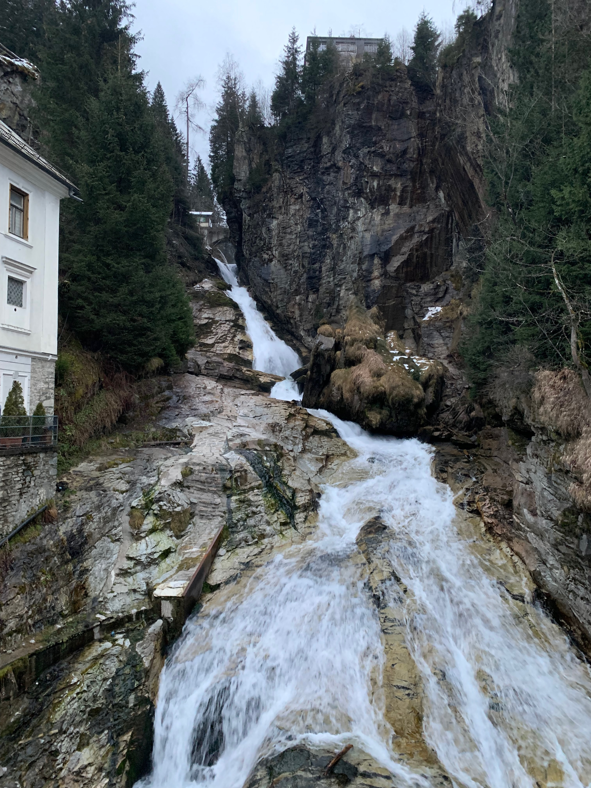
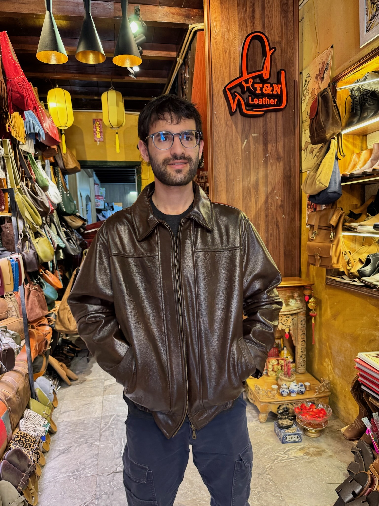
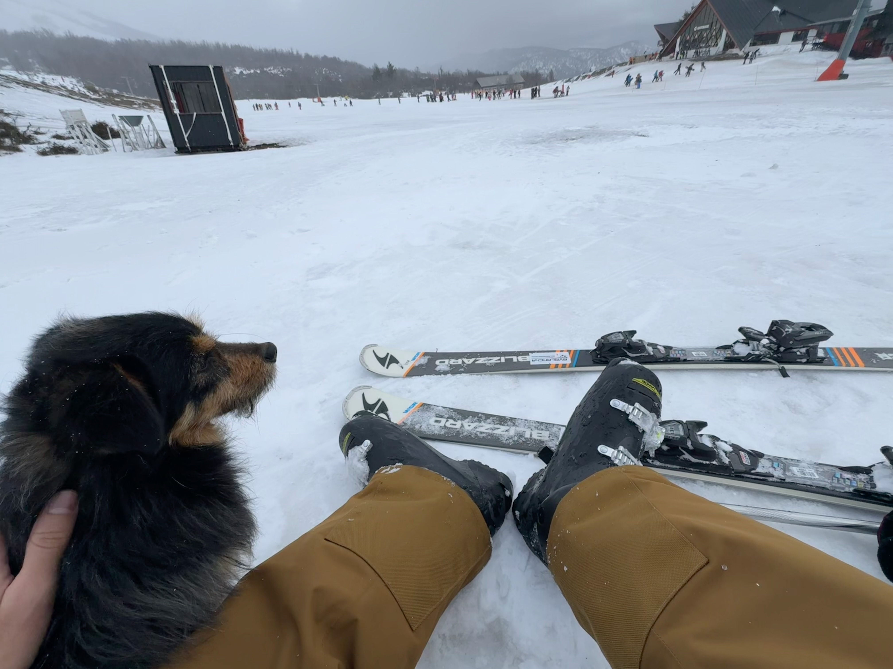
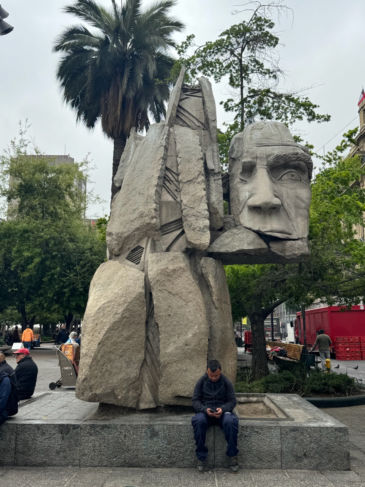
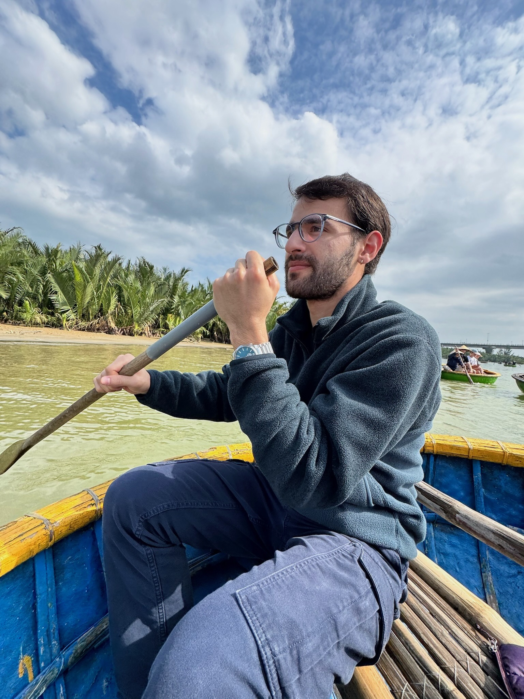
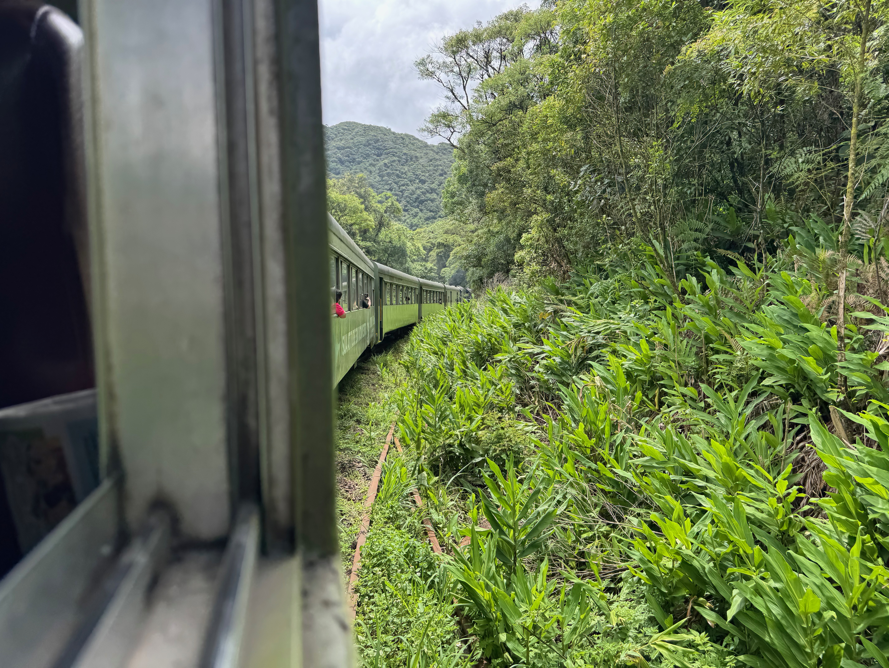
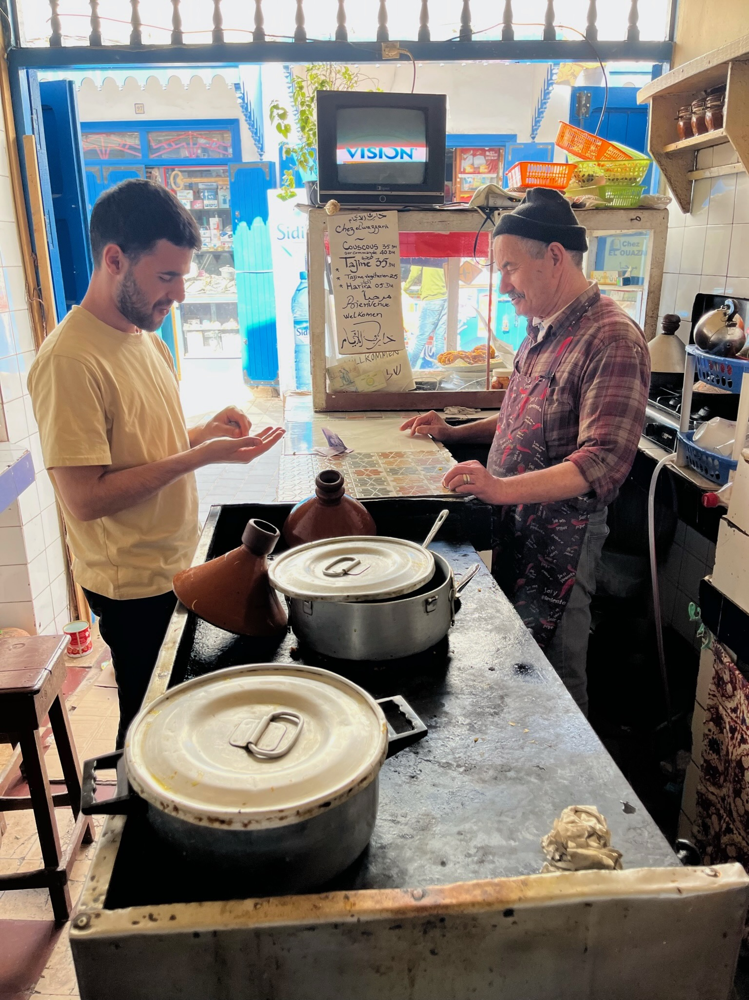
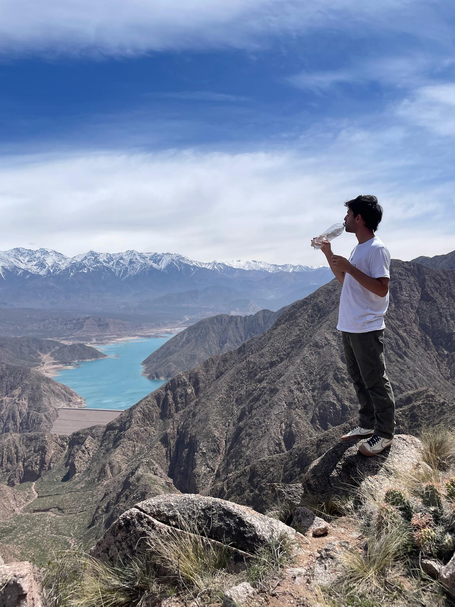

Third-year ME student at Case Western Reserve, researching machine learning and robotics — and looking for every opportunity to connect, build, and explore.
I'm a third-year mechanical engineering student at Case Western Reserve University with a passion for machine learning and robotics. My research sits at the intersection of computer vision and autonomous systems, and I'm currently looking to pursue a PhD to push that work further.
In everything I do, I'm an explorer at heart — I find meaning in connecting with people, experiencing new cultures, and striving to be an active source of light in the world.
A mix of research, personal projects, and creative work.
Real-time object segmentation and 3D localization using pose-free images and simple text guiding. Currently under review at the European Conference on Computer Vision.
A lightweight sound classification model built in Python. Created for Harvard's CS50P Final Project.
3D survival/stealth/strategy game made in Unity. Run around as a chicken eating mind- and body-altering foods; try to escape before you're caught!
Handcrafted woodworking and woodturning pieces. Browse the collection on Etsy.








What I'm watching, listening to, or reminiscing about.